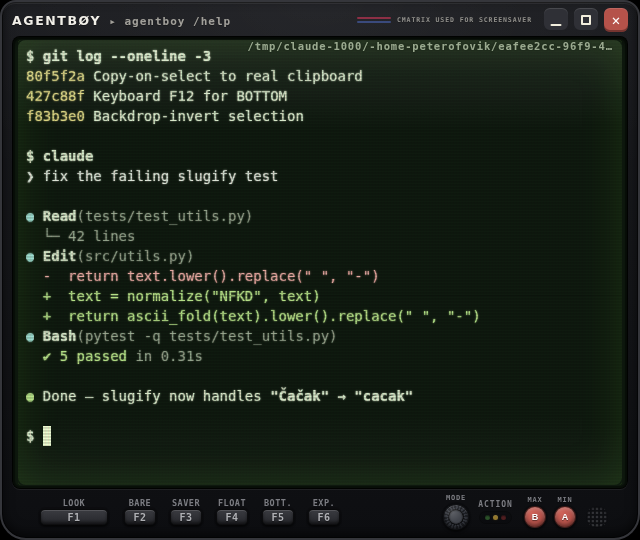
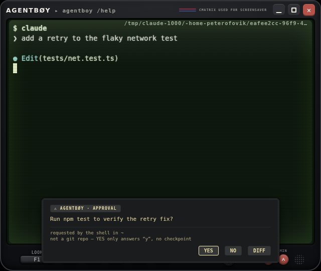
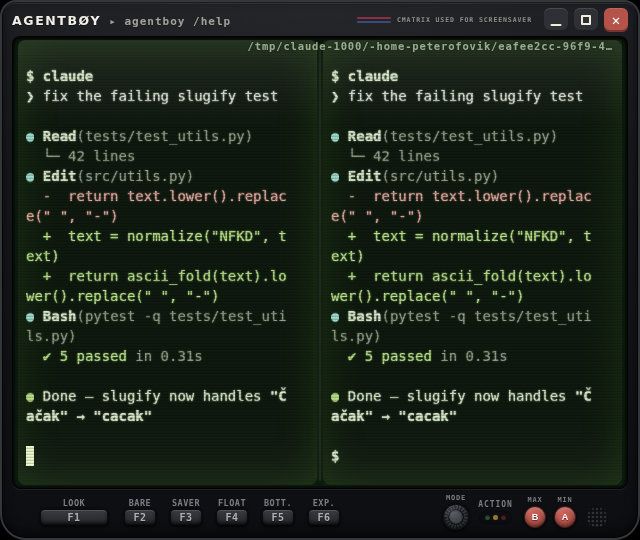
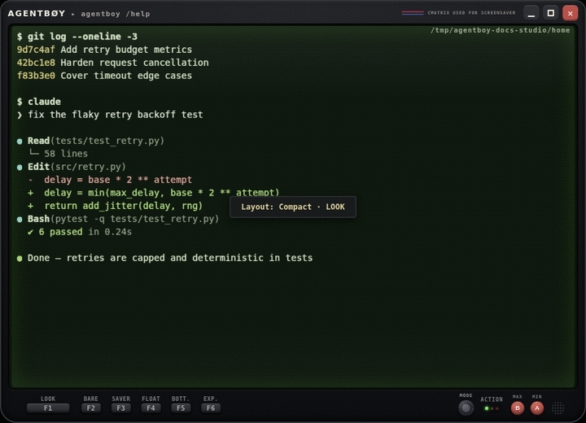
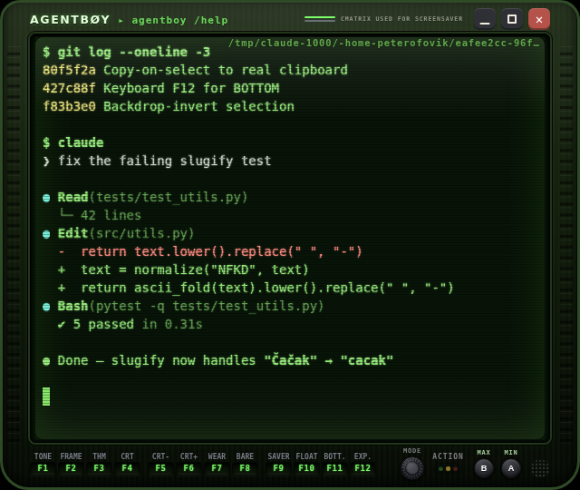
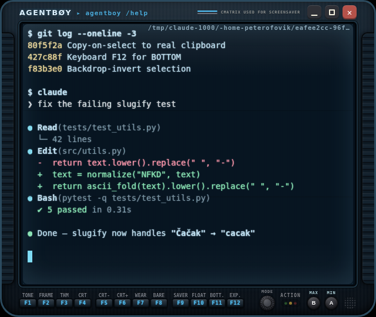
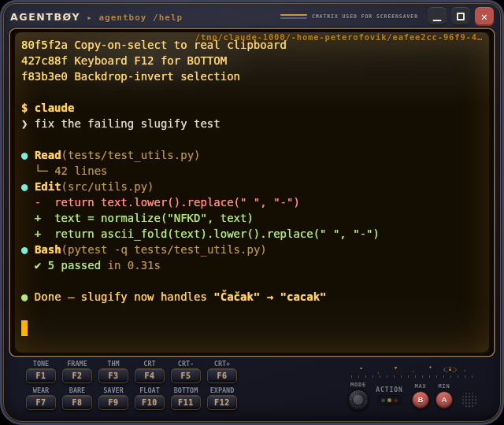
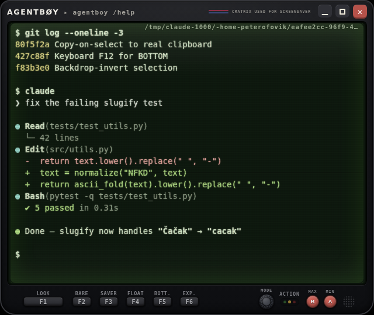
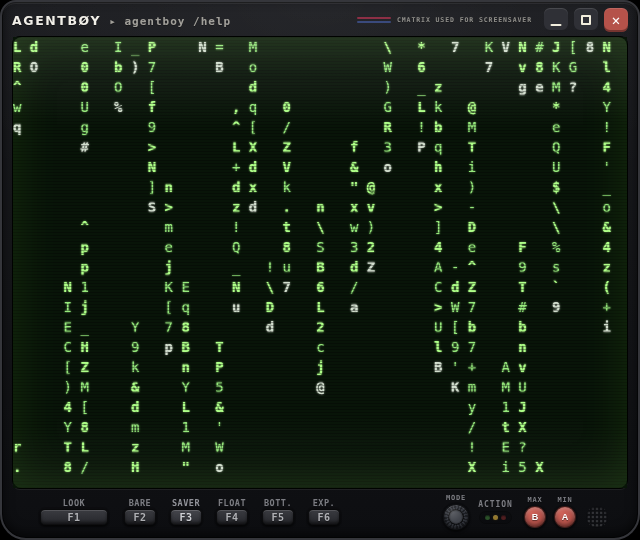
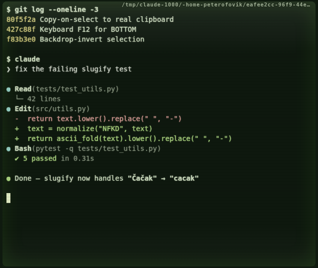

A retro handheld-console terminal designed for AI pair programming.
Real PTYs, approval dialogs, git undo checkpoints — in a Game Boy shell.

Workflow

Agents ask for permission with an escape sequence: OSC 98 ; prompt=… pops a retro RPG dialog with YES / NO / DIFF, git-checkpoints the pane's working directory on YES, opens the Diff Inspector on DIFF, and answers y/n back to the shell. The dialog renders on the chassis, outside PTY-paintable space — a spoofed escape sequence can't fake it. Full spec: protocol.md.

Terminator-style splits — every pane runs its own PTY, with draggable dividers, search, and X11 CLIPBOARD + PRIMARY support. Undo checkpoints roll back the last AI edit with one right-click.
A traffic light on the chassis shows what's happening at a glance — and turns red when the agent prints a numbered option menu or a y/n question and waits on you.
Shells
The round MODE knob cycles the whole chassis: Compact → Full → Robo-Terminal → Robo-Grip → Fable Deck. FRAME re-liveries the robo shells and the Deck (14 stops, including vivid and faded red/orange); TONE flips them to worn-beige / ivory bodies.


Brushed gunmetal with machined vent ribs on the side rails; keys carved in as backlit dark wells. Shown in the Phosphor livery.

The Mk.III: brushed metal with rubber side grips and milled steel keys. Shown in the Sapphire Ocean livery.

Claude's own layout: midnight-indigo lacquer, brass inlay, twelve bigger keys in two rows and an engraved star chart over the controls.
Chassis & screen
Eight of the fourteen presets below — every theme also has a warm sepia tone in the app, plus eight CRT tube modes with combinable Sweep/Noise extras and 20 intensity steps.

Agentboy DMG — the classic pea-soup phosphor, dark.
Extras

F9 SAVER toggles cmatrix in an overlay on its own PTY — rendered under the active CRT tube, and the same button turns it off (any key or click exits too). Install it with sudo apt install cmatrix.

F8 BARE hides the whole chassis for a bare, distraction-free terminal; the same key or a right-click brings the shell back. Windows narrower than a third of the screen shed the toolbar automatically (slim shell).
The round speaker by the A button is the master sound toggle: ON starts Phosphor Drift, a cozy lofi tune composed for agentboy (the speaker glows while it plays), and enables the effects — all derived from the tune itself: D-major pentatonic, soft triangle waves, plus a whisper-quiet typing tick.
| MODE | cycle the five shell layouts (Alt+M) |
| F1 TONE | dark / light / sepia |
| F2 FRAME | chassis frame style — 14 liveries |
| F3 THM | cycle the 14 themes |
| F4–F6 | CRT mode (8 tube modes) & intensity |
| F7 WEAR | new / worn / cracked chassis |
| F8 BARE | hide the chassis |
| F9 SAVER | cmatrix screensaver (toggle) |
| F10 FLOAT | free-floating resizable window |
| F11 / F12 | scroll to bottom / expand over the toolbar |
| B / A | full-height column / snap to grid |
| LOOK (Alt+L) | theme · tone · CRT · FX · wear · frame, live-apply |